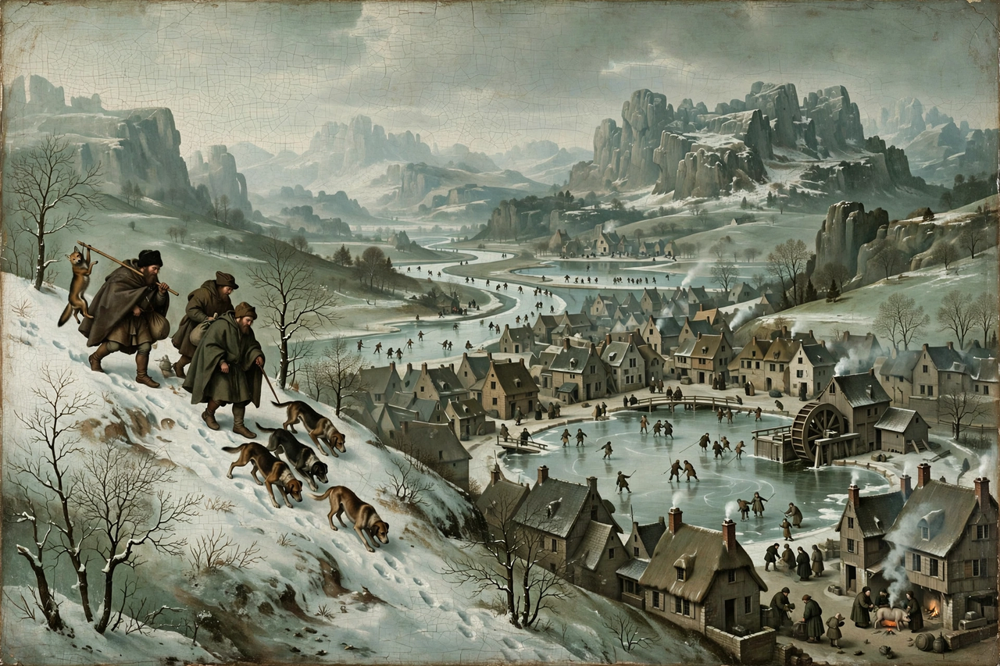

The Hunters in the Snow (Dutch: Jagers in de Sneeuw), also known as The Return of the Hunters, is a 1565 oil-on-wood painting by the Flemish artist Pieter Bruegel the Elder. It is one of the most famous works of Northern Renaissance art and a canonical image of winter in Western painting. The work is held by the Kunsthistorisches Museum in Vienna.
| The Hunters in the Snow | |
|---|---|
 The Hunters in the Snow, 1565 | |
| Artist | Pieter Bruegel the Elder |
| Year | 1565 |
| Medium | Oil on wood panel |
| Dimensions | 117 cm × 162 cm (46 in × 64 in) |
| Location | Kunsthistorisches Museum, Vienna |
The painting shows a winter landscape viewed from a height. In the left foreground, a party of hunters returns from an expedition, trudging downhill through deep snow with their dogs; their catch is meagre — one man carries a single fox — suggesting a hard season. Below them a village spreads across the valley floor, where figures skate, play games, and tend fires on and around frozen ponds and a millpond. A great craggy mountain range, out of keeping with the flat Low Countries geography, rises in the distance, a recollection of Bruegel's journey across the Alps in 1552–53. Birds, including a prominent magpie and crows in the bare trees, punctuate the cold grey-green sky.
The Hunters in the Snow belongs to a cycle of six large panels depicting the times of the year, commissioned by the Antwerp banker and art collector Niclaes Jonghelinck. Five panels survive: The Gloomy Day (early spring), The Hay Harvest (early summer), The Harvesters (late summer), The Return of the Herd (autumn), and The Hunters in the Snow (winter). The sixth, presumably late spring, is lost. The Vienna museum holds three of the surviving panels; The Harvesters is in the Metropolitan Museum of Art, New York, and The Hay Harvest in Prague.
The winter of 1564–65 was one of the harshest of the so-called Little Ice Age, and the painting is often read as a document of that climatic moment as well as a meditation on human life continuing in the face of a vast, indifferent natural order. The composition's high viewpoint and the hunters' exclusion from the village festivities below have been widely discussed; the scene appears as a recurring motif in Andrei Tarkovsky's films Solaris (1972) and The Mirror (1975), and the painting features in Lars von Trier's Melancholia (2011). W. H. Auden's poem "Musée des Beaux Arts" (1938) meditates on Bruegel's depiction of suffering passing unnoticed amid ordinary life, chiefly in relation to the Landscape with the Fall of Icarus.
The painting has become one of the most reproduced images of the Northern Renaissance, endlessly imitated as a generic emblem of a traditional European winter and Christmas season, and a popular subject for parody and pastiche in popular culture.